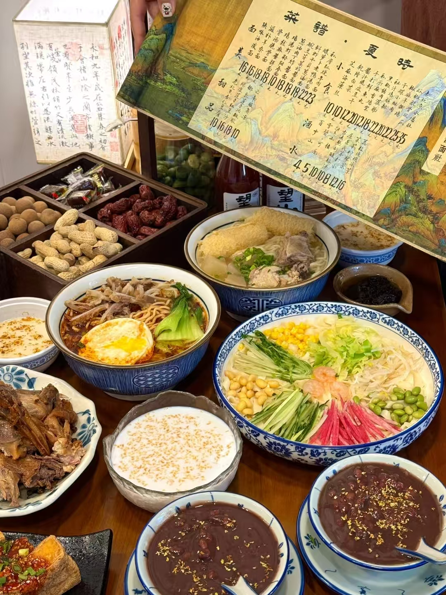
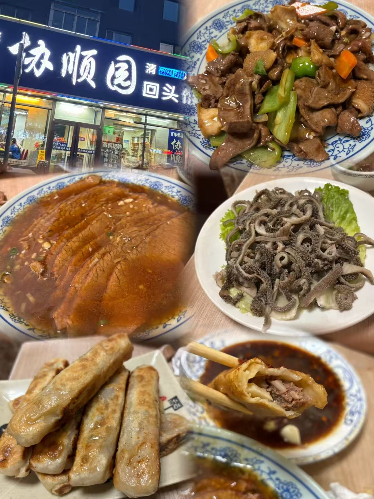
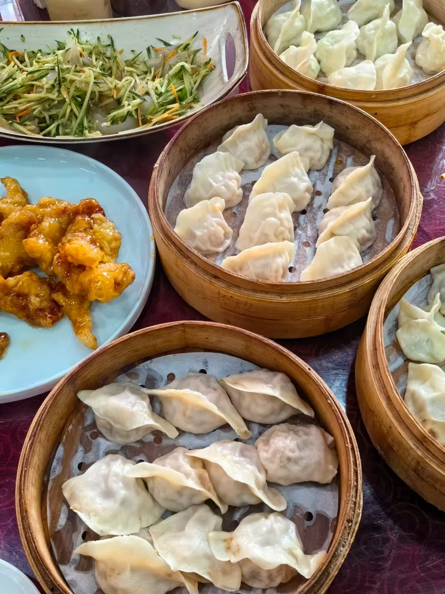
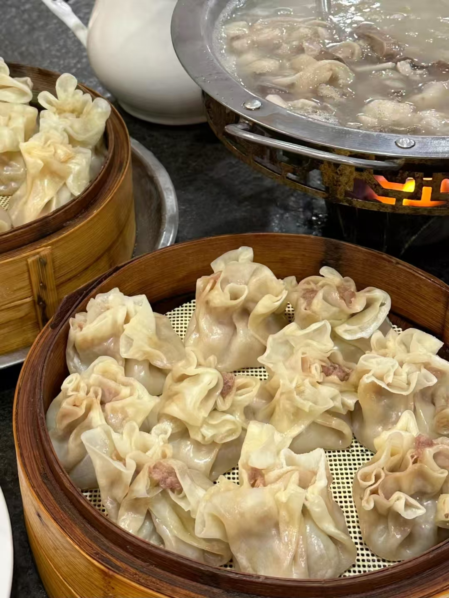

周边美食推荐

陈福记炸酱面社
踏入陈福记，扑面是浓郁的酱香，夹杂着葱油与肉臊的焦香。灶台边，师傅手起刀落，五花肉丁肥瘦相间，在热油里煸得金黄，再倒入六必居黄酱与甜面酱的混合底料，小火慢熬，直至酱汁油亮泛光，筷子一划，缝隙不沾——标准的“小碗干炸”。
面条是现擀的粗面，筋道弹牙，过凉水后更显爽利。老板娘麻利地码上黄瓜丝、豆芽，再浇一勺热酱，肉丁晶莹透亮。拌匀后，酱香裹挟着面香直冲鼻腔，入口咸鲜回甜，肥肉丁化在舌尖，瘦肉丁嚼劲十足。配上一瓣生蒜，辛辣激得酱香更浓，最后啜一口面汤，通体舒泰。

协顺园回头馆
踏入协顺园，蓝白配色的清真招牌下飘来阵阵油香。灶台边，师傅正将长条状的面坯包入牛肉馅，四面“回头”折叠，动作利落如行云流水。平锅热油滋响，回头煎得两面金黄，外皮酥脆透亮，咬开瞬间肉汁迸溅——精选牛里脊剁馅，仅以葱姜提鲜，满口纯粹肉香。
配菜必点扒肉条，酱色浓亮的牛肉片铺满蒜泥，肥瘦相间，趁热入口嫩滑不腻。再要一碗羊杂汤，奶白汤底浮着厚实的羊肚羊肺，撒一把香菜，鲜暖直抵脾胃。老食客惯搭一盘老虎菜，黄瓜丝、青椒碎拌得爽脆，解腻又提神。
店里多是操着沈阳腔的大爷，就着“老雪”啤酒侃山，年轻人则举手机拍下这形似金条的百年小吃。人均30元的实惠价，换得几代人口中的“回头”之味，值了。

老边饺子
推开老边饺子的雕花木门，扑面是百年老店的烟火气——蒸笼白雾缭绕，煎锅滋滋作响。点一笼招牌“百年煸馅饺”，肉馅先煸后煨，吸足鸡汤，咬开时汁水丰盈，油梭子的焦香混着韭菜鲜甜，确有独到之处。冰花煎饺是视觉盛宴，金黄油脆的网状冰花覆在饺底，轻咬一声脆响，内馅虾仁弹嫩。

马家烧麦
踏入马家烧麦店，麦香裹挟着肉香扑面而来。透明玻璃后，师傅手法娴熟地捏褶，烧麦宛如绽放的白玉花。刚出锅的烧麦热气腾腾，薄如蝉翼的面皮泛着油亮光泽，轻轻咬开，浓郁的牛骨肉汤汁瞬间在舌尖漫开，羊肉馅料紧实弹牙，混合着葱姜的辛香，每一口都鲜香四溢。搭配酸甜开胃的醋碟，再喝上一口解腻的砖茶，从味蕾到身心都得到满足。传统手艺成就的美味，让人吃完仍回味无穷，忍不住期待下一次的舌尖邂逅。

中街冰点
盛夏的中街，远远就能看见中街冰点城门前排起的长队。推门而入，冷气裹着奶香扑面而来，玻璃柜里陈列着各色冰点，最抢眼的还是招牌“中街大果”。
点一支原味麻酱大果，咬开厚实的巧克力脆皮，浓郁芝麻香在口中化开，甜而不腻，奶味醇厚得像是含了一口冻住的鲜奶。老式冰糕也值得一试，用木勺挖着吃，绵密扎实，绿豆味清甜解暑，恍惚回到摇着蒲扇的童年午后。
二楼雅座常有全家老小围坐，孩子们举着五彩缤纷的圣代嬉笑，老人慢悠悠啜着杏仁茶。玻璃窗外是中街熙攘的人流，而这一口延续七十年的老味道，始终是沈阳人舌尖上的避暑胜地。